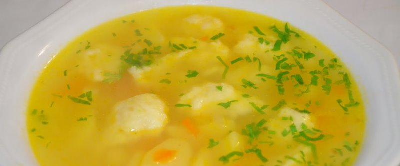

Куриный суп

Сварить бульон: пол куриной грудки залить 2л. воды. Варить до кипения, снять пенку. Добавить небольшую луковицу, пол морковки, лавр, перец горошком, кусочек капусты и 1 ст.л. соли. Варить 30 минут. Курицу достать, через дуршлаг перелить в другую кастрюлю.
Обжарить нарезанные 1 морковь, 1 луковицу. Нарезать 3 картофелины и положить в бульон вместе с 1 порцией риса. Порезать курицу и добавить в бульон с обжаркой и куркумой. Варить 15 минут.
В самом конце добавить зелень.